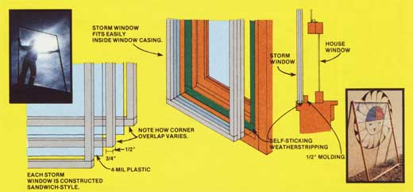

Storm windows, as you know, can keep your home significantly warmer during the winter ... but they cost a bundle when you buy the blamed things readymade. That single fact alone really left me "out in the cold" when last season's unseasonably frigid weather settled over the country. I simply didn't have enough money lying around to buy storm windows for my house.
So, necessity being the mother of invention and all that, I decided to build my own ... from inexpensive wood and plastic rather than the currently moretraditional aluminum and glass. And I'm happy to report that the did-'em-myself units did the job ... for a fraction of the price of ready-mades!
I kicked off this thrilling saga by letting my fingers do the walking through the Solberg family's trusty Sears and Roebuck catalog ... where I found four kinds of plastic film: mylar, polyethylene, fiberglass, and vinyl. Mylar was too expensive (60°/square foot), polyethylene ages and turns brittle in a matter of months, and fiberglass isn't transparent enough (I wanted to see out as well as let the sunlight in).
Which left Sears' 4-mil "super clear vinyl"... and that sounded like a good bet: "no visual distortion, stays flexible to -26°F, stays clear 2 to 3 years in direct sunlight".
The way I figured it, if that vinyl'll deliver as advertised, it should last dang near indefinitely in my northeast-facing picture window (which gets no winter sunlight to speak of) and it should hold out up to 10 years in my south windows (cause I only plan to leave the plastic up for four months of each year). So I went ahead and ordered a roll (4 X 25 feet) of the 4-mil vinyl for $12 ... which works out to 120 per square foot.
The frames were even easier. I already had some 1/4' X 3/4" molding lying around ... so I bought another 100 linear feet of the strips just to make sure I had enough. I also purchased some 1/2" and 3/4" wire nails (to hold everything together, of course) ... and we (my wife, Judy, and 1) were ready to roll.
Or unroll ... the plastic, that is.
We started small...by building one of our homemade coverings for a 3 X 4-foot window before tackling our 4 X 6-foot monster.
First, I measured the inside of the window casing, and then I cut the molding strips for my storm windows so that when they were assembled-the finished frames would be 1/4' shorter, both vertically and horizontally, than what I'd measured. This was to make sure that my completed storm window would slide into place next to the existing glass window. I figured that if the storm window turned out a little too small, I could always fill in around it with weatherstripping ... but if it was too large, I'd never be able to cram it into position.
The accompanying drawings show how Judy and I made each of our do-it-yourself storm windows like a sandwich ... with two layers of plastic and three of wood. By using two layers of the vinyl film this way, we've actually created two separate pockets of air between the inside of our house and the chilly outdoors (plastic film, air, film, air, glass of the regular window) when the storm windows are in place. If we lived further north (instead of here in New Mexico) we might even put more layers in our sandwiches. And note, too, the way in which we overlapped the corners of our homemade frames for extra strength.
If you construct some of these storm windows for yourself, just lay your first four pieces of molding down in the shape of a rectangle on any flat surface. Then spread a sheet of vinyl (cut with an inch overhang all around so you'll have something to hold to when you stretch the plastic taut) over the strips. Lay four more strips (positioned so that their ends overlap at the corners in the opposite direction that the first strips' ends overlap) on the vinyl. And, finally, tack this first "half" of your storm window sandwich together with 1/2' nails while someone stretches the plastic tight for you.
Once you've gotten that far, roll out another layer of vinyl, top with your third set of molding strips ... and then nail through the complete sandwich (wood, plastic, wood, plastic, wood) with the 3/4' nails while your partner stretches the second layer of vinyl taut. Trim off the excess plastic if you like, but that's not at all necessary.
That's it. Your storm window is finished. If you worked carefully, it'll be square. If you didn't, you can still make it fit the window casing you built it for ... and make it fit airtight too: Just nail a strip of 1/2" molding around the inside of the casing, face the "front" surfaces of this lip with self-sticking foam weatherstripping, push the storm window up against the stripping enough to compress it, and-Zot! -a completely airtight seal!
That's how we did it anyway, on our 3 X 4foot windows. For the 4 X 6-foot monster, we followed the same general plan of attack ... except we put two layers of molding in between the sheets of vinyl. (I figured it'd be harder to pull the larger pieces of plastic taut, so I wanted to leave a bigger air space between 'em.) I'll come clean on another point too: Our big storm window-even with double strips in its center-came out pretty wobbly. Which leads me to believe that the lighter molding is fine for windows up to 3 X 4 feet ... but for anything bigger, you're better off making your frames from 1" X 2" furring strips.
Wobbly or not (and, of course, our big storm window was only wobbly until we fastened it in place in the window casing it was made for), we like our cheapo storm windows. The vinyl transmits nearly 100% of the light that strikes it ... which means that we've now got the cold winds of winter shut out of our house, but we're still letting the warm sunshine in!
|
 PHOTOS BY THE AUTHOR |
|
|